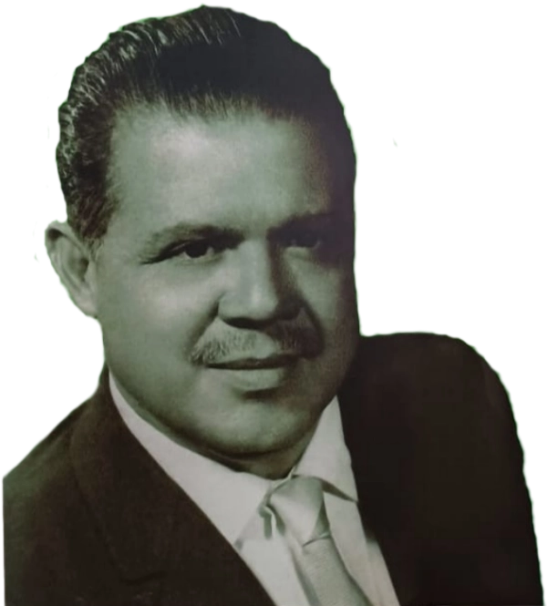

Nació en Torreón Coahuila, México el 30 de octubre de 1910. Sus primeros años los pasó bajo una situación difícil. Sus necesidades lo encaminaron a buscar trabajo, encontrando una oportunidad en el estudio fotográfico del Sr. Sosa. Después, en Chihuahua trabajó al lado del Sr. Ronquillo. Se casó a la edad de 17 años con Carmen Gutiérrez García de 15 años. Esta época no era fácil debido a las secuelas de la revolución, por lo que buscó establecerse en la ciudad de México, siguiendo la línea que le había trazado el destino: la fotografía.
En México conoce al Sr. Osuna, gran fotógrafo de su tiempo, y trabaja para él. Es contratado para tomar fotografías de los museos y sus obras, con la condición que sus tomas llevaran el sello de Osuna. Por ello, se puede asegurar que mucha obra fotográfica de la casa Osuna de esta época, es de autoría de Alfonso Rivas. En 1939, conoce al Sr. Gustavo Bellón, cónsul de Francia en Oaxaca, en la tienda donde se vende su obra fotográfica; quien le propone a mi padre, Alfonso Rivas Bañuelos, que se traslade a Oaxaca para realizar este mismo trabajo. Finalmente lo convence, y en 1940 viaja a la ciudad de Oaxaca.

A su arribo queda maravillado con la ciudad, especialmente con Santo Domingo, el Zócalo, sus calles principales, y sobre todo con su gente, sus costumbres y su comida. Tal es el impacto, que toma decidido el trabajo y empieza a tomar fotos de todos los aspectos. En 1943, decide que su familia completa se establezca en Oaxaca y continúa su labor fotográfica, logrando tener un estudio muy grande como nunca lo soñó, en la calle de Las Casas 108 altos, contra esquina del mercado Benito Juárez.
Desde su comienzo logra cautivar tanta clientela por su estilo personal e innovador, que se colocaba como el primer fotógrafo en Oaxaca de su tiempo. Retrataba de 200 a 300 personas diariamente, desde eventos sociales hasta funcionarios públicos.
La mejor descripción de su trabajo es transmitida por las miles de imágenes de los oaxaqueños y de todos los rincones del estado que él captó hasta el día de su muerte.
Estas imágenes se han exhibido, por una servidora, en cada oportunidad que me dan, esperando no sea la última, pues hay una gran colección que dejó mi padre.
Su servidora: Irma Rivas (†)
Esta es una pequeña muestra del trabajo del Sr. Rivas que su familia ofrece hoy a nuestra ciudad y particularmente al Museo Regional Casa Verde de Tuxtepec.
Colección de Fotos Rivas Oaxaca
Colección de Fotos Rivas Oaxaca 2da. parte
Colección de trajes
← Regresar a Arte contemporáneo